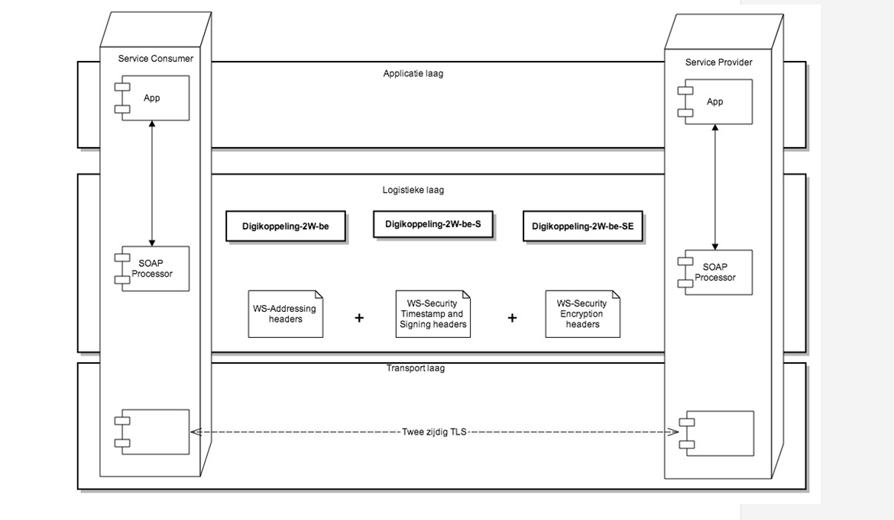

Dit document beschrijft de functionele specificaties voor de Digikoppeling
koppelvlak standaard WUS
Het document is bestemd voor architecten en ontwikkelaars die op basis van WUS
gegevens willen uitwisselen via Digikoppeling.
Alle Digikoppeling webservices die op WUS gebaseerd zijn, moeten conformeren aan
de koppelvlakstandaard WUS. Deze wordt tot in detail in dit document
gespecificeerd. Doel van dit document is ontwikkelaars te informeren wat deze
koppelvlakstandaard nu precies inhoudt en waar zij zich aan moeten conformeren.
Het document is bestemd voor architecten en ontwikkelaars die op basis van WUS
gegevens willen uitwisselen via Digikoppeling. Het gaat hierbij om zowel service
providers als service requesters (clients).
Status van dit document
Dit is de definitieve versie van dit document. Wijzigingen naar aanleiding van consultaties zijn doorgevoerd.
Documentbeheer
Documentbeheer
Datum
Versie
Auteur
Opmerkingen
04/04/2016
3.4
Logius
Referenties naar Beveiligingsvoorschriften aangepast naar nieuwe Document Digikoppeling beveiligingsvoorschrift type wsa:TO gecorrigeerd Bijlagen met voorbeelden verwijderd
Dit document beschrijft de functionele specificaties voor de Digikoppeling
koppelvlak standaard WUS
Het document is bestemd voor architecten en ontwikkelaars die op basis van WUS
gegevens willen uitwisselen via Digikoppeling.
Alle Digikoppeling webservices die op WUS gebaseerd zijn, moeten conformeren aan
de koppelvlakstandaard WUS. Deze wordt tot in detail in dit document
gespecificeerd. Doel van dit document is ontwikkelaars te informeren wat deze
koppelvlakstandaard nu precies inhoudt en waar zij zich aan moeten conformeren.
Het document is bestemd voor architecten en ontwikkelaars die op basis van WUS
gegevens willen uitwisselen via Digikoppeling. Het gaat hierbij om zowel service
providers als service requesters (clients).
1.2 Opbouw Digikoppeling documentatie
Digikoppeling is beschreven in een set van documenten. Deze set is als volgt
opgebouwd:
De standaarddocumenten (groen/vierkant aangegeven) vallen onder het beheer zoals geformaliseerd in het document Digikoppeling Beheermodel.
De ondersteunende documentatie wordt onderhouden door Logius als de beheerder van de standaard (en afgestemd met stakeholders/ gebruikers).
Alle goedgekeurde documenten zijn te vinden op de website van Logius, www.logius.nl.
Dit document beschrijft de WUS-variant van de koppelvlakstandaarden. Naast de
Koppelvlakstandaard WUS zijn er ook de ebMS2- en REST-API-standaarden. Deze worden in een aparte
documenten beschreven.
1.3 Koppelvlak & koppelvlakstandaard
Een koppelvlak is een interface die volgens standaarden de gegevensuitwisseling
vastlegt. Het werken met vaste standaarden is essentieel voor een koppelvlak.
Hierdoor wordt implementatie vergemakkelijkt. Ook wordt het mogelijk diverse
soorten berichten door te sturen met een grote mate van interoperabiliteit,
omdat via de standaard afspraken over hun inhoud gemaakt is.
Eén van de belangrijkste eisen die door de overheid gesteld worden bij de
inrichting van generieke voorzieningen, is dat er niet veel maatwerk ontwikkeld
hoeft te worden, maar dat er van “off the shelf” commercieel of Open source
geleverde software gebruik gemaakt kan worden. Voor Digikoppeling, dus voor de
logistieke laag, betreft dat het niet willen ontwikkelen van software voor de
adapters.
Dit doel kan bereikt (benaderd) worden doordat gekozen wordt voor internationale
(de jure of de facto) vastgelegde standaarden, die door “alle” leveranciers
interoperabel zijn geïmplementeerd.
Een andere eis is dat met name afnemers gebruik kunnen maken van één “stekker”
(één logistiek koppelpunt). Aanbieders dienen hiervoor de nodige voorzieningen
te treffen.
Een koppelvlakspecificatie beschrijft de eisen die gesteld worden aan de
adapters om interoperabel met elkaar te kunnen communiceren. Digikoppeling gaat
over logistiek, dus over de envelop en niet over de inhoud. De hele set
informatie die tezamen nodig is voor een complete generieke Digikoppeling
koppelvlakdefinitie bestaat uit:
Interfacedefinitie “on the wire”, (voorbeeld)listing van SOAP headers en
informatie over velden en hun specifieke inhoud.
De voor Digikoppeling vereiste interoperabiliteit van de WUS standaarden van
OASIS en W3C wordt gebaseerd op de profielen (en tests) van OASIS WS-BRSP
(voorheen WS-I).
1.4 Opbouw van dit document
Hoofdstuk 1 bevat een aantal algemene inleidende onderwerpen.
Hoofdstuk 2 bevat de kern van de standaard. Deze is onderverdeeld naar
onderwerpen/gebieden: WSDL, WS-Addressing, naamgeving, beveiliging,
betrouwbaarheid en binaire data. Het identificeert de gekozen internationale
(WS-I) profielen die dienen als fundament voor de Digikoppeling
Koppelvlakstandaard WUS. Die keuzes, de nadere invullingen voor Digikoppeling
binnen de ruimte van die standaarden/profielen en specifieke aandachtspunten bij
de keuzes, vormen tezamen de “voorschriften” per onderwerp.
Hoofdstuk 3 definieert de resulterende Digikoppeling WUS profielen.
Gehanteerde terminologie: Glossary
Voor de definities die binnen het Digikoppeling project gehanteerd worden, zie
de ‘Digikoppeling Glossary’ via de onderstaande website.
WUS is een acroniem voor WSDL, UDDI en SOAP: WUS dus. Daarmee wordt een familie
van internationale standaarden van OASIS en W3C bedoeld; deze worden ook vaak
met WS-* aangeduid. Deze standaarden gaan over application-to-application
webservices.
Alle Digikoppeling webservices die op WUS gebaseerd zijn, moeten aan deze
koppelvlakstandaard conformeren. Doel van de Koppelvlakstandaard WUS is het
eenduidig en bruikbaar definiëren van het koppelvlak voor WUS. Er zijn daarvoor
de volgende onderwerpen relevant: WSDL met adressering en naamgeving,
beveiliging, betrouwbaarheid, binaire data, resulterende berichtheaders,
profielen van Digikoppeling en compliancevoorzieningen. Deze standaard wordt
verder aangevuld met “Best Practices” en adviezen, beschreven in een apart
document. Alle documentatie over Digikoppeling is te vinden op Logius | Digikoppeling.
2.1.1 WSDL
Een webservice wordt deels formeel en automatisch verwerkbaar gedefinieerd
(beschrijving – description) door een WSDL. Deze WSDL geeft een beschrijving van
de eisen die ten aanzien van de communicatie gesteld worden. Een WSDL kan onder
andere bestaan uit meerdere schema definities in aparte XSD’s en policy
definities. Gezamenlijk vormt dit een abstracte definitie van de webservice. De
webservice communiceert feitelijk door middel van SOAP berichten, die
gegenereerd worden op basis van de WSDL. Adressering en naamgeving zijn
specifieke aandachtsgebieden.
2.1.2 Resulterende berichtheaders
Deze standaard beschrijft per definitie aan welke eisen een Digikoppeling WUS
implementatie moet voldoen. De praktijk leert dat dergelijke eisen vaak erg
abstract zijn en dus gebaat zijn bij voorbeelden. Voorbeelden van berichten zijn
gepubliceerd op Logius | Digikoppeling. Voorbeelden van WSDL’s zijn beschikbaar als
onderdeel van Digikoppeling Compliance Voorziening.
2.2 Ondersteunde varianten
Om redenen van interoperabiliteit, eenvoud en overzichtelijkheid onderscheidt
deze Digikoppeling Koppelvlakstandaard een tweetal varianten van uitwisselingen.
Elke variant veronderstelt bepaalde voorgedefinieerde keuzes voor parameters als
beveiliging en betrouwbaarheid en is daarmee een “profiel” voor WUS.
Elke uitwisseling op basis van de WUS-protocollen over Digikoppeling zal moeten
voldoen aan één of een combinatie van de volgende Digikoppeling WUS-varianten:
Best Effort: dit zijn synchrone uitwisselingen die geen faciliteiten
voor betrouwbaarheid (ontvangstbevestigingen, duplicaateliminatie etc.)
vereisen. Voorbeelden zijn toepassingen waar het eventueel verloren raken
van sommige berichten niet problematisch is en waar snelle verwerking
gewenst is.
End-to-End Security: een bericht wordt beveiligd tussen de
uiteindelijke consumer en de uiteindelijke provider, ook wanneer er zich
intermediairs bevinden in het pad tussen die twee. Het betreft hier
authenticatie van de consumerorganisatie, conform het Digikoppeling
authenticatiemodel, waarbij alleen de identiteit van de consumerorganisatie
relevant is(signing), en encryptie van het bericht (payload inclusief
attachments) onderweg. Voor de authenticatie en encryptie wordt
gebruikgemaakt van WS-Security.
Attachments: één of meerdere bijlagen, naast natuurlijk het reeds bestaande
(xml) bericht zelf. Dit kan, maar hoeft niet, toegepast te worden in
combinatie de bovengenoemde profielen: het is dus optioneel.
Vertrouwelijkheid en authenticatie van zender en ontvanger wordt als volgt
gerealiseerd:
voor Point-to-Point Security, door middel van twee-zijdig TLS op
transport-niveau (in het HTTP kanaal). (De toepassing ervan is verplicht
op alle Digikoppeling versies.)
voor End-to-End Security, door middel van signing (ondertekening) en
(optioneel) encryptie (versleuteling) op berichtniveau (payload
inclusief de attachments, ook wel 'bijlagen' genoemd) in combinatie met
(point-to-point) twee-zijdig TLS in het HTTP kanaal.
De onderstaande tabel geeft in essentie de eigenschappen van de verschillende
Digikoppeling profielen weer. Voor alle profielen wordt tweezijdig TLS gebruikt
op transportniveau (HTTPS).
Profile Names
Profile Names
Digikoppeling WUS
2-zijdig TLS
Signed
Encrypted
Attachments
Best Effort
Digikoppeling 2W-be
√
―
―
Optional
End-to-End Security
Best Effort – Signed
Digikoppeling 2W-be-S
√
√
―
Optional
Best Effort – Encrypted
Digikoppeling 2W-be-SE
√
√
√
Optional
2.3 Compliancevoorzieningen
Voor de Digikoppeling Koppelvlakstandaard WUS is een compliancevoorzieningen
beschikbaar gesteld, waarmee een ontwikkelaar of beheerder kan testen “of het
berichtenverkeer werkt”. Deze compliancevoorziening is gedefinieerd aan de hand
van de WSDL’s die opvraagbaar zijn op
Digikoppeling Compliance Voorziening.
De volgende interacties zijn beschikbaar:
Digikoppeling service requester: wordt gebruikt om een ontwikkelde servicere
requester (client) te testen.
Digikoppeling service provider: wordt gebruikt om een ontwikkelde service
provider (service) te testen.
In dit hoofdstuk worden de verschillende versies van de onderliggende
internationale standaarden vermeld.
2.4.1 Overwegingen
Primair wordt gekozen voor de interoperabele profielen van OASIS WS-BRSP
(voorheen WS-I). Het gaat dan om WS-I Basic Profile (BP) 1.2, een set
specificaties van webservices die interoperabiliteit bevorderen. Digikoppeling
kiest voor standaarden die algemeen interoperabel beschikbaar zijn, dat wil
zeggen interoperabel geïmplementeerd zijn in het grootste deel van de
(ontwikkel) tools. De kans daarop is groter bij “final” standaarden dan bij
drafts. Digikoppeling kiest daarom voor WS-I Standaarden met status final.
Bovenstaande standaarden zijn gebaseerd op diverse onderliggende standaarden.
Gevolg is dat de Digikoppeling WUS standaard gebruikmaakt van de volgende set
van standaarden:
Standaarden
Gevolg van onder andere
HyperText Transfer Protocol 1.1 (RFC7230 t/m RFC7233)
De inhoud van de Digikoppeling standaard vloeit voort uit bovengenoemde
standaarden, of vormt een nadere invulling daarvan (een keuze uit toegestane
mogelijkheden in die standaarden).
In de paragrafen hierna worden die onderdelen achtereenvolgens behandeld:
WSDL,
WS-Addressing,
Binaire data,
Beveiliging,
Betrouwbaarheid,
Namespace.
2.5.1 Service definitie WSDL
Voorschriften ten gevolge van de keuze voor BP 1.2
Nr
Omschrijving
WW001
Voor de SOAP berichten wordt SOAP 1.1 en “document-literal binding” gehanteerd. Hierbij wordt als
transport binding HTTP voorgeschreven.
WW002
Door het opleggen van het SOAP style type “document/literal” zal de inhoud van de berichten beschreven
worden door XML en geen afgeleide daarvan. Dit houdt in dat er niet een eigen mapping mag worden
geïntroduceerd voor encoding types zoals bijvoorbeeld bij SOAP encoding het geval is. Kortom, de
datatypen moeten voldoen aan de XML Schema Part 2: Datatypes
WW003
Bij document –literal mag het SOAP “body” element slechts 1 XML element bevatten. Hierbinnen kunnen
eventueel wel meerdere elementen opgenomen worden.
WW004
Basic Profile stelt eisen aan het “PortType” van een WSDL. Hierbij mogen de “parts” van de “messages”
alleen een “element” bevatten (geen “parts” die een “type” attribuut gebruiken). “R2204 A
document-literal binding in a DESCRIPTION MUST refer, in each of its soapbind:body
element(s), only to wsdl:part element(s) that have been defined using the element attribute.” Er is geen
voorbeeld bij WS-I, maar een voorbeeld kan zijn:
Aanvullende voorschriften (dus specifieke Digikoppeling-invulling binnen de ruimte van een bovengenoemde standaard)
Nr
Omschrijving
WS001
Er kunnen meerdere operaties per webservice gedefinieerd worden.
WS002
De SOAPAction aanduiding in de WSDL wordt gevuld met een lege string (“”), wordt weggelaten, of heeft dezelfde vulling als de { http://www.w3.org/2007/05/addressing/metadata}Action in de WSDL. In de HTTP Header van het bericht moet de SOAPAction een lege string met quotes zijn (“”), of een waarde hebben gelijk aan de WS-Addressing Action (wsa:Action).
WS003
De Digikoppeling WUS ondersteunt alleen de zogenaamde “request/response” berichtenuitwisseling (zie WSDL 1.1 specificatie paragraaf “2.4 Port Types”) [wsdl].
WS005
De WSDL bevat slechts één “portType” per WSDL bestand.
WS006
Digikoppeling ondersteunt alleen UTF-8.
WS007
In de header zijn geen eigen velden (header blocks) toegestaan. De header bevat alleen de in het betreffende profiel vastgestelde velden, die dus uitsluitend gedefinieerd zijn in het betreffende WS-I profiel (respectievelijk de onderliggende OASIS/W3C standaarden).
Voorschriften als gevolg van het toepassen van WS-Addressing
Nr
Omschrijving
WA001
Digikoppeling WUS gebruikt de volgende velden uit
WS-Addressing:
wsa:To
wsa:Action
wsa:MessageID
wsa:RelatesTo
wsa:ReplyTo
wsa:From
De communicatie binnen het Digikoppeling domein is voor een deel afhankelijk van de toepassing van
WS-Addressing velden. Aangezien er meerdere WS-Addressing specificaties zijn, die onder meer
verschillende namespaces kunnen hebben, is er voor gekozen om alleen de specificatie van 2006/05
[https://www.w3.org/TR/ws-addr-core/](https://www.w3.org/TR/ws-addr-core/)[ws-addr-core] verplicht te stellen in de berichten
binnen het Digikoppeling domein. Hieronder wordt de toepassing van de verschillende velden toegelicht.
Er is gekozen voor een zo klein mogelijke subset uit de WS-Addressing standaard om de kans op
interoperabiliteitsissues te minimaliseren. Met het toepassen van deze standaard wordt het “achter de voordeur” routeren mogelijk.
wsa:To Dit wordt gebruikt om de endpoint vast te leggen waar het bericht naar toe dient te gaan. Het element wsa:to is van het type wsa:AttributedURIType - een extensie op het xs:anyUri type- en dient gevuld te worden met een ‘Adres’ element. De waarde van het adres element kan hetzij een absolute URI zijn of http://www.w3.org/2005/08/addressing/anonymous.
Optioneel kan het To-adres aangevuld te worden met een OIN door het gebruik van querystring parameters (bijvoorbeeld http://service-end-point?OIN=xxxxxx). De waarde van de OIN in het adres is het OIN nummer van de ontvangende partij.
wsa:Action Deze waarde wordt gebruikt om een specifieke operatie aan te roepen. Deze waarde is terug te vinden in de WSDL van de betreffende aan te roepen webservice van de Service Provider. Dit veld is verplicht en moet in het bericht worden opgenomen.
wsa:MessageID De waarde hiervan kan door de service requester of provider zelf ingevuld worden zolang dit een waarde is die aan de onderliggende specificatie voldoet ([ws-addr-core]).
wsa:RelatesTo Dit element komt alleen voor in de SOAP header van het response bericht. Het bevat de waarde van de wsa: MessageID van het request bericht.
wsa: ReplyTo De verplichte specificatie van wsa:ReplyTo geldt alleen voor het request bericht. De specificatie mag zowel plaatsvinden door gebruik te maken van de default-waarde als door expliciete opname van deze SOAP-header. Voor synchrone communicatie t.b.v. bevragingen zal het replyTo veld gevuld zijn met de waarde http://www.w3.org/2005/08/addressing/anonymous of het element volledig weglaten. Bij weglaten van dit veld moet de ontvanger conform WS-Addressing specificatie alsnog de waarde http://www.w3.org/2005/08/addressing/anonymous gebruiken.
wsa:From Het gebruik van wsa:From is optioneel voor synchrone berichten voor
bevragingen. De waarde van dit veld wordt gebruikt om aan te geven waar het bericht vandaan komt. De wsa:From is van het type wsa:EndPointReferenceType en dient gevuld te worden met een ‘Adres’ element (wsa:Address). De waarde van het adres element kan hetzij een absolute URI zijn of http://www.w3.org/2005/08/addressing/anonymous. Optioneel kan het From-adres aangevuld te worden met een OIN door het gebruik van querystring parameters (e.g. http://service-end-point?OIN=xxxxxx). De waarde van de OIN in het adres is het OIN nummer van de verzendende partij.
De elementen wsa:ReplyTo en wsa:From zijn beiden van de type
‘wsa:EndPointReferenceType’. Het EndPointReferenceType stelt enkel het element ‘Address’ verplicht. De overige velden van EndPointReferenceType zijn optioneel en zijn om compatibiteitsredenen niet toegestaan binnen Digikoppeling.
Het is toegestaan om overige WS-Addressing velden op te nemen in de berichten omdat bij sommige toolkits het genereren van deze velden niet onderdrukt kan worden. Hierbij geldt wel de beperking dat de waarde voor deze velden het routeringsmechanisme niet verstoort. Derhalve moet, indien het bericht andere velden dan hierboven bevat, de waarde http://www.w3.org/2005/08/addressing/anonymous of http://www.w3.org/2005/08/addressing/none aan deze velden toegekend worden. Overzicht verplichte WS-Addressing properties in request en response berichten (volgens
[ws-addr-metadata])
WS-Addressing request headers Field
Field
Property
Mandatory
Description.
wsa:To
[destination]
Y
Provides the address of the intended receiver of this message.
wsa:Action
[action]
Y
Identifies the semantics implied by this message.
wsa:From
[source endpoint]
Y1
Provides the address of the original sender of this Message
wsa:ReplyTo
[reply endpoint]
Y2
Intended receiver for the reply to this message.
wsa:FaultTo
[fault endpoint]
N
Intended receiver for faults related to this message. May be included to direct fault
messages to a different endpoint than [reply endpoint]
wsa:MessageID
[message id]
Y
Unique identifier for this message. Used in the [relationship] property of the reply
message.
wsa:RelatesTo
[relationship]
N
Indicates relationship to a prior message. Unused in this Message Exchange Pattern
(MEP), but could be included to facilitate longer running message exchanges.
1Voor bevragingen is source endpoint optioneel. 2Impliciet specificeren van het reply endpoint door weglaten van ReplyTo is
ook toegestaan.
WS-Addressing response headers
Field
Property
Mandatory
Description.
wsa:To
[destination]
N3
Provides the address of the intended receiver of this message.
wsa:Action
[action]
Y
Identifies the semantics implied by this message.
wsa:From
[source endpoint]
N
Message origin. Unused in this MEP, but could be included to facilitate longer running message
exchanges.
wsa:ReplyTo
[reply endpoint]
N
Intended receiver for replies to this message. Unused in this MEP, but could be included to facilitate
longer running message exchanges.
wsa:FaultTo
[fault endpoint]
N
Intended receiver for faults related to this message. Unused in this MEP, but could be included to
facilitate longer running message exchanges.
wsa:MessageID
[message id]
Y4
Unique identifier for this message. Unused in this MEP, but may be included to facilitate longer running
message exchanges.
wsa:RelatesTo
[relationship]
Y
Indicates that this message is a reply to the request message, using the request message [message id] value and the predefined http://www.w3.org/2005/08/addressing/reply
IRI.
3Sommige platformen wijken op dit punt af van de Web Service Addresing 1.0 –
Metadata standaard. Het wsa:To veld wordt bij synchrone SOAP verkeer actief uit
het antwoordbericht gefilterd. Om hier vanuit de standaard aan tegemoet te komen
mag bij het ontbreken van dit veld in het antwoordbericht door de ontvanger de
anonymous waarde (http://www.w3.org/2005/08/addressing/anonymous) worden
aangenomen.
4 Hiermee wordt afgeweken van wat de Web Services Addressing 1.0 – Metadata
standaard voorschrijft. Volgens deze standaard is de MessageID in response
optioneel. Bovenstaande properties kunnen in een aantal gevallen ook gespecificeerd worden
door betreffende velden in de header weg te laten. Zie WS-addressing 1.0- Core, paragraaf 2.1 en paragraaf 3.2; zie ook BP 1.2 paragraaf 3.7.14.
2.5.3 Binaire Data
In de Digikoppeling Koppelvlakstandaard WUS worden twee mogelijkheden
ondersteund om binaire data te versturen. Dat zijn Base64Binary (Base64Binary in
payload element van het bericht) of MTOM (MIME wrappers waarbij binaire data in
een aparte Multipart/Related pakket is opgenomen). Bij het toepassen van MTOM
wordt er ook wel gesproken van een geoptimaliseerd bericht.
De meest gangbare toolkits kunnen MTOM berichten ontvangen en versturen. Het wel
of niet toepassen van MTOM kan vaak vanuit de code of middels een
configuratiebestand geregeld worden.
Bij het inrichten bepaalt de provider of een koppelvlak wel of geen
ondersteuning biedt voor MTOM. Bij een nieuwe koppeling in samenspraak, bij
toevoegen van een afnemer aan een bestaande dienst dient deze zich te
conformeren aan de bestaande inrichting (en wel of niet gebruik van MTOM).
Nr
Omschrijving
WM001
Toepassen MTOM wordt door webservice provider bepaald.
2.5.4 Beveiliging
Point-to-Point en End-to-End beveiliging wordt ondersteund. Point-to-Point
beveiliging wordt uitgevoerd op basis van TLS, End-to-End beveiliging op basis
van WS-Security.
2.5.4.1 Point-to-Point beveiliging
Deze beveiliging zorgt ervoor dat het volledige bericht en het http-protocol is
beveiligd tijdens het transport van verzender naar ontvanger. Alle Digikoppeling
profielen verplichten point-to-point beveiliging. Hierbij gelden de volgende
voorschriften:
Nr
Omschrijving
WT001
Authenticatie op transportniveau gebeurt op basis TLS met tweezijdige authenticatie. De huidige toegestane protocolversies zijn beschreven in Digikoppeling Beveiligingsstandaarden en voorschriften. Client and Server authenticatie is vereist gebruikmakend van HTTPS en alle in Digikoppeling Beveiligingsstandaarden en voorschriften genoemde TLS versies. De TLS implementatie mag niet op een oudere TLS of SSL versie terug kunnen vallen.
De te gebruiken certificaten in de productie omgeving voldoen aan de eisen van PKIoverheid (PvE 3b) en de inhoud van de identificerende velden in het certificaat dienen te voldoen aan de afspraken als gesteld in de functionele eisen Authenticatie Digikoppeling. Met het toepassen van PKIoverheid-certificaten die Digikoppeling compliant zijn, wordt hieraan voldaan.
De geldigheid van het certificaat wordt getoetst met betrekking tot de geldigheidsdatum en de Certificate Revocation List(CRL) die voldoet aan de eisen van PKIoverheid.
WT005
De betreffende CRL dient zowel voor de versturende als ontvangende partij te benaderen zijn.
WT006
Voor communicatie over HTTPS wordt port 443 gebruikt.
Overwegingen: Wanneer men afwijkt van Poort 443 dient de gebruiker van de site of de service naast https ook het afwijkende poortnummer in de URI te specificeren. Het is sterk aanbevolen voor publieke services en sites om poort 443 te handhaven en met behulp van een firewall rule of proxy pass het verkeer intern te redirecten naar een afwijkende poort. Het verbergen van een open poort door een afwijkend poortnummer te gebruiken heeft geen zin omdat port scans eenvoudig open en toegankelijke poorten ontdekken.
WT007
Binnen een TLS-sessie kunnen meerdere berichten verstuurd worden.
WT008
Voor de TLS-sessie moet een maximale duur gelden, na het verloop hiervan wordt de verbinding verbroken. Partijen zijn vrij om de maximale duur zelf te bepalen.
2.5.4.2 End-to-End beveiliging
Deze beveiliging is optioneel en wordt bovenop point-to-point beveiliging
ingezet op SOAP niveau met behulp van ondertekening en versleuteling. End-to-End
beveiliging is primair van toepassing in de scenario’s waar intermediairs
betrokken zijn gedurende de gegevensuitwisseling en in scenario’s waarbij
onweerlegbaarheid van belang is.
Nr
Omschrijving
WB001
Toepassen WS-Security 1.0 en WS-Security 1.1
Overwegingen: Basic Security Profile 1.1 is sinds 2010 november final geworden. Hierin worden zowel de WS-Security 1.0 als de WS-Security 1.1 namespaces beide gebruikt.
WB002
Toepassen van Timestamp in security header met Timestamp Created is verplicht. Timestamp Expires is optioneel. De tijdstamp moet een Universal Time Coordinated (UTC) tijdzone aanduiding hebben. Bij het toepassen van een timestamp gaat tijdsynchronisatie van de verschillende communicerende systemen een rol spelen. Indien dit niet mogelijk is moet hiermee met de vulling van de Created en Expires rekening worden gehouden door middel van een “timestampSkew“.
Overwegingen: Bij toepassen van Timestamp Expires is tijdsynchronisatie van belang. Om mogelijke problemen hiermee te voorkomen, zou er overwogen kunnen worden om een eis op te nemen dat de Expires niet in Timestamp opgenomen mag worden. Omdat het expliciet weglaten van de Expires niet in alle tooling mogelijk is, wordt hiervoor niet gekozen. Tevens kan het zijn dat door het ontbreken van tijdsynchronisatie er problemen zijn met de Timestamp Created, in de situatie waarbij de ontvanger heeft vastgesteld dat de Timestamp Created in de toekomst ligt. Hiervoor biedt tooling vaak een “timestampSkew”. Deze geeft de toegestane afwijking ten opzichte van UTC aan.
WB003
Indien WS-Security wordt toegepast, is ondertekenen verplicht en versleutelen optioneel (keuze profiel Digikoppeling 2W-be-S, Digikoppeling 2W-be-SE,).
Overwegingen: De berichten kunnen zowel ondertekend als versleuteld worden. Gezien het doel van WS-Security, te weten het “door een intermediair heen” kunnen doorgeven van authenticatie-informatie, is ondertekenen primair van belang; daarmee is ook onweerlegbaarheid geregeld. Uiteraard kan het in een bepaalde situatie ook een eis zijn dat het bericht niet leesbaar is voor de intermediair.
WB004
Ondertekenen van bericht onderdelen SOAP:body, SOAP:headers (WS-Addressing headers en Timestamp) is verplicht bij toepassing van End-to-End beveiliging. Van elk van deze onderdelen dient separaat een digest te worden berekend en te worden opgenomen in het SignedInfo element. De handtekening dient te worden gegenereerd op basis van de inhoud van het SignedInfo element.
Overwegingen: Met het ondertekenen wordt authenticatie, integriteit en onweerlegbaarheid ondersteund. Het is van belang dat de integriteit en onweerlegbaarheid van de inhoud en header van het bericht kan worden vastgesteld, de SOAP:body, SOAP:header (WS-Addressing en het Timestamp element) zullen dus ondertekend moeten worden.
WB005
Bij toepassen van versleutelen geldt dit voor de volgende bericht onderdelen: SOAP:body
Overwegingen: De WS-Addressing headers worden niet versleuteld, dit omdat deze anders niet leesbaar zijn voor intermediairs. De wsa:Action en de ondertekening worden dus niet versleuteld. Ook de SOAPaction kan niet afgeschermd worden. Door beveiliging op transport niveau is het risico van een niet afgeschermde wsa:Action en SOAPAction tot een minimum beperkt.
WB006
Berichten worden eerst ondertekend en vervolgens versleuteld.
Overwegingen: Omdat er zowel wordt ondertekend als versleuteld, moet de volgorde hiervan gespecificeerd worden: -Bij verzending eerst ondertekenen en vervolgens versleutelen. -Bij ontvangst eerst ontsleutelen en daarna de ondertekening verifieren.
WB007
Technische gegevens ten behoeve van ondertekenen
Parameter
Waarde
Onderteken optie Algoritme
Exclusive XML Canonicalization
[http://www.w3.org/2001/10/xml-exc-c14n](http://www.w3.org/2001/10/xml-exc-c14n\#)
Publieke sleutel welke gebruikt is voor het signing proces dient meegeleverd te worden met het bericht via een ‘Direct security token’ reference.
Overwegingen: Het certificaat wordt in het bericht meegestuurd. Hiermee kan de ontvanger door middel van het meegeleverd certificaat de handtekening controleren. Het certificaat dient uiteraard wel vertrouwd te zijn via een truststore configuratie waarin het PKIoverheid stamcertificaat alsmede de intermediair certificaten en Trusted Servicer Provider certificaten zijn opgenomen. Zie hiervoor Overzicht PKIoverheid certificaten. (een vereiste voor veel platformen om de validatie van het bericht aan te vangen).
WB011
Het toepassen van End-to-End beveiliging wordt op serviceniveau aangeduid. Alle operaties en dus berichten (request en response) worden ontsloten volgens één bepaald Digikoppeling profiel.
Overwegingen: Beveiligingseisen kunnen op het niveau van het bericht gedefinieerd worden, maar niet alle toolkits kunnen hiermee overweg. Totdat alle belangrijke toolkits dit wel kunnen, is het beter om bericht beveiliging op serviceniveau te definiëren.
WB012
Voor het versleutelen van het responsebericht wordt het certificaat in het requestbericht gebruikt.
Toelichting: In eis WB010 wordt aangegeven dat het certificaat voor ondertekening in het bericht wordt opgenomen. Indien een webservice wordt ontsloten volgens het Digikoppeling 2W-be-SE profiel moet deze op basis van het requestbericht kunnen bepalen welk certificaat gebruikt moet worden om de payload van de response te versleutelen. Dit kan door het certificaat in het requestbericht te gebruiken voor versleuteling van de response. Ook de requester dient hier dus rekening mee te houden bij ontsleutelen van het responsebericht. Om het request bericht initieel te versleutelen dient de publieke sleutel van de ontvangende partij al in de truststore geregistreerd te zijn.
WB013
Indien WS-Security wordt toegepast, is het controleren van de signature door de ontvangende partij verplicht.
Overwegingen: Het ondertekenen van berichten is alleen zinvol als de ontvanger van het bericht ook daadwerkelijk de signature valideerd. Indien de validatie mislukt, dient het bericht afgewezen te worden en een foutmelding als antwoord te worden verstuurd. Ook indien de ondertekening van de respons niet valide is mogen de gegevens niet verwerkt worden. De ontvanger kan wedermaal een requestbericht versturen, maar de kans is groot dat out-of-band communicatie noodzakelijk is om er voor te zorgen dat de dienstaanbieder een valide respons stuurt.
WB014
Indien WS-Security wordt toegepast dient het responsebericht de signature van het requestbericht als onderdeel van het SignatureConfirmation element op te nemen (WS Security 1.1.).
Overwegingen: Door het herhalen van de ondertekening van het requestbericht kan de ontvanger van het responsebericht valideren dat het oorspronkelijke requestbericht in onaangetaste staat is ontvangen en verwerkt. Een contract wordt voor een Digikoppeling WUS Koppelvlak gedefinieerd door een WSDL. De WSDL 1.1 specificatie op zich biedt geen mogelijkheden om het gebruik van WS-Security aan te geven.
2.5.5 Naamgeving, namespaces
Er worden geen aanvullende eisen gesteld aan de namespaces. In de header mogen
alleen velden voorkomen conform OASIS/W3C standaarden (gebaseerd op de daar
gedefinieerde namespaces), of service-specifieke namen, gedefinieerd door de
provider met een namespace gedefinieerd door de provider. Ook aan de naamgeving
van services, operations etc. worden vanuit Digikoppeling geen eisen gesteld. De
prefix “Digikoppeling” is gereserveerd voor mogelijk toekomstig gebruik.
2.6 Foutafhandeling
Er worden momenteel nog geen eisen gesteld aan de foutafhandeling, anders dan in
de onderliggende specificaties vermeld worden, zoals WS-I Basic Profile 1.2. In
het document ” Digikoppeling Best Practices WUS” is een aantal adviezen
opgenomen.
Aanvullende standaarden die gebruikt worden in combinatie met Digikoppeling
kunnen overigens wel eisen stellen aan de fouthandeling.
3. Digikoppeling profielen WUS
Op Digikoppeling wordt gewerkt met zogenaamde “profielen”. Een profiel is een
gedefinieerde bundeling van functionaliteit en daarmee van voorschriften. In de
huidige Digikoppeling versie zijn drie WUS-profielen aanwezig:
Digikoppeling 2W-be,
Digikoppeling 2W-be-S en
Digikoppeling 2W-be-SE.
Voor de drie profielen geldt dat deze zowel geoptimaliseerd (volgens de MTOM
standaard) als niet geoptimaliseerd verstuurd kunnen worden. Hierom zijn voor
elk profiel voorbeeldberichten beschikbaar in zowel de geoptimaliseerde (MTOM)
als niet geoptimaliseerde vorm. Alle voorbeeldberichten zijn gebundeld in een
Set voorbeeldberichten (zip) en beschikbaar op Logius | Digikoppeling.

Figuur 2Schematische weergave Digikoppeling WUS profielen
In het bovenstaande figuur wordt schematisch weergegeven welke WUS profielen
Digikoppeling biedt en wat de algemene verschillen zijn. Alle profielen worden
in de volgende paragrafen in meer detail beschreven. In Set voorbeeldberichten (zip)
zijn voorbeeld berichten opgenomen voor de drie profielen. Deze bieden een
duidelijk inzicht hoe de berichten uiteindelijk eruit komen te zien.
3.1 WUS Profiel Digikoppeling 2W-be
Beveiliging
Dit profiel maakt voor de beveiliging alleen gebruik van tweezijdig TLS.
Headerblocks
Alleen de verplichte WS-Addressing headers zijn hier van toepassing (zie
soapenv:Header in Set voorbeeldberichten (zip)).
Dit profiel maakt voor de beveiliging gebruik van tweezijdig TLS en tevens
worden de berichtonderdelen ondertekend zoals vermeld in 2.5.4.2 End-to-End beveiliging.
Headerblocks
In dit profiel zijn de WS-Addressing en WS-Security 1.0 ondertekening
(wsse:Security) headers van toepassing (zie Set voorbeeldberichten (zip)).
MTOM
De geoptimaliseerde (MTOM) voorbeeldberichten voor profiel Digikoppeling 2W-be-S
worden weergegeven in Set voorbeeldberichten (zip).
3.3 WUS Profiel Digikoppeling 2W-be-SE
Beveiliging
Dit profiel maakt voor de beveiliging gebruik van tweezijdig TLS en tevens
worden de berichtonderdelen ondertekend en versleuteld zoals vermeld in
2.5.4.2 End-to-End beveiliging.
Headerblocks
In dit profiel zijn de WS-Addressing en WS-Security 1.0 ondertekening
(wsse:Security) headers van toepassing. Ook wordt hierbij de payload van het
bericht versleuteld (xenc:EncryptedData) (zie Set voorbeeldberichten (zip)).
MTOM
De geoptimaliseerde (MTOM) voorbeeldberichten voor profiel Digikoppeling
2W-be-SE worden weergegeven in Set voorbeeldberichten (zip).
4. Conformiteit
Naast onderdelen die als niet normatief gemarkeerd zijn, zijn ook alle diagrammen, voorbeelden, en noten in dit document niet normatief. Verder is alles in dit document normatief.